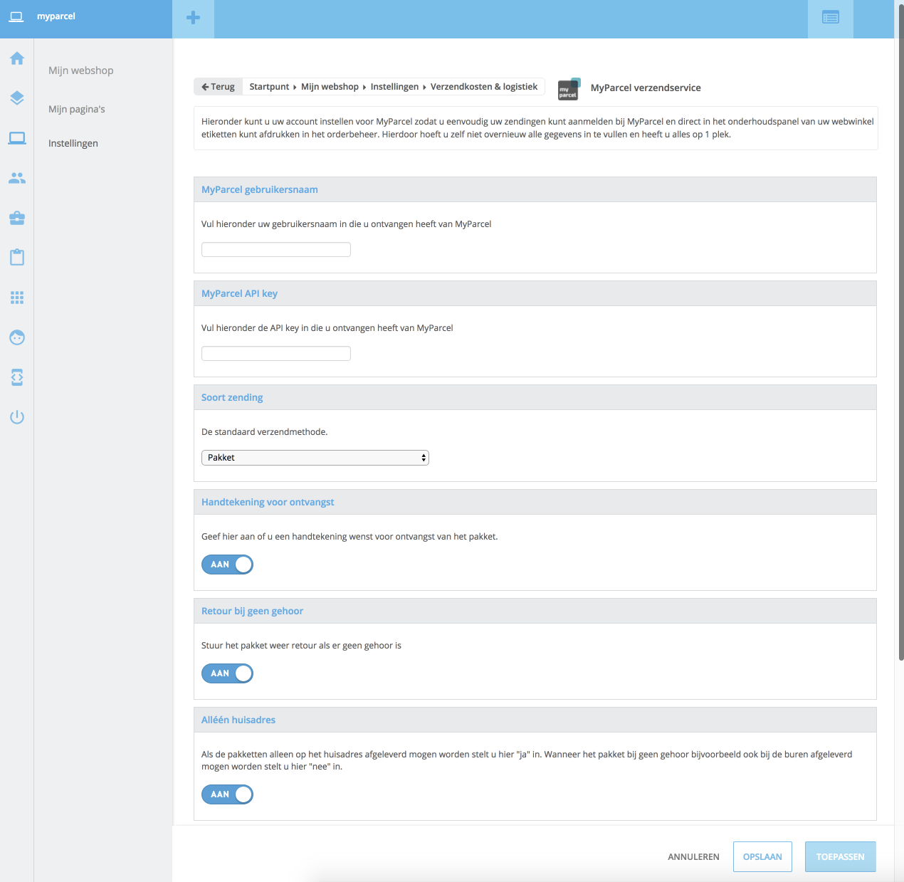
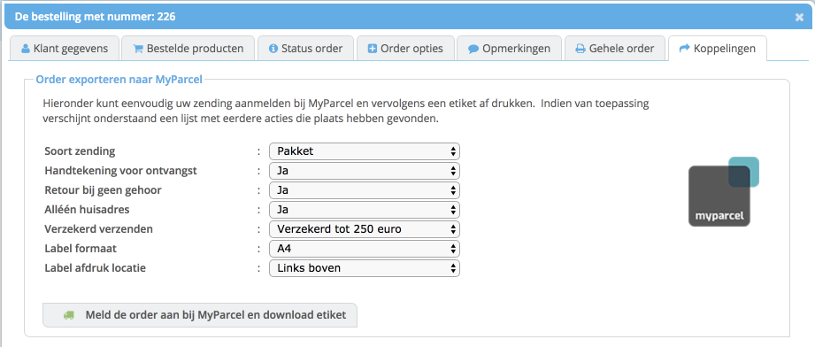
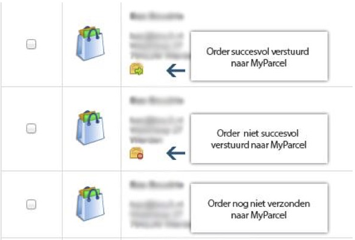
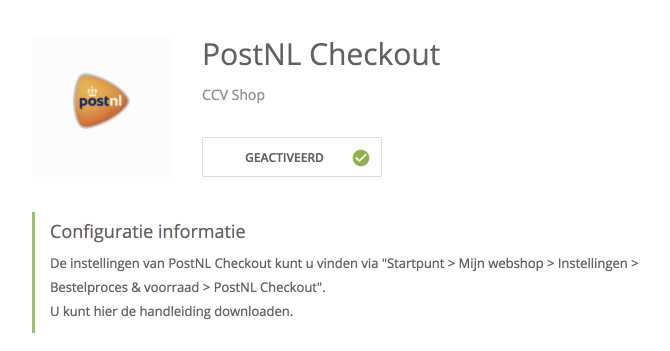
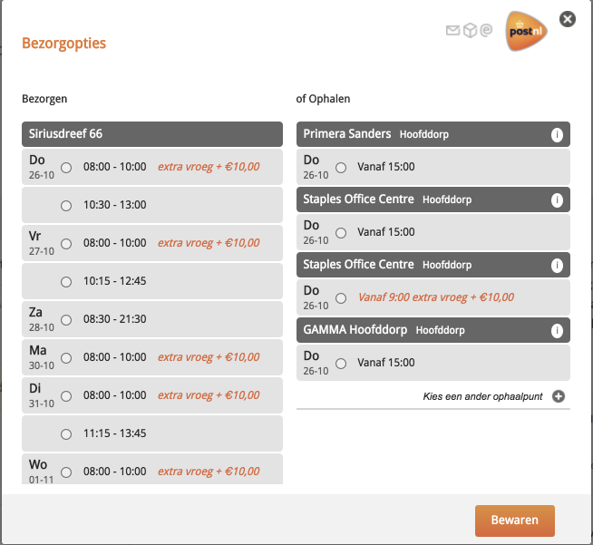

Inleiding
CCV shop heeft een koppeling gerealiseerd met MyParcel. MyParcel is een oplossing voor web winkeliers die hun verzendproces gemakkelijker en voordeliger willen organiseren. De voornaamste voordelen zijn voordelige tarieven, uitstekende service en de betrouwbare levering van PostNL.
Met de koppeling die CCV shop heeft ontwikkeld kun je heel eenvoudig met één druk op de knop in het onderhoudspanel jouw zendingen aanmelden bij MyParcel en vervolgens direct een etiket afdrukken zonder dat je daarvoor in MyParcel bent ingelogd.
Ook wordt automatisch de Track & Trace code toegevoegd aan een order, zodat je d.m.v. een status update de klant op de hoogte kunt brengen van de Track & Trace code.
Dit bespaart je dus veel tijd omdat je jouw gegevens niet nogmaals hoeft in te voeren of dat je moet werken met import bestanden.
Deze handleiding beschrijft hoe je de koppeling instelt en vervolgens ook gebruikt.
Inhoud
1 Instellen van de koppeling
De koppeling instellen is erg eenvoudig, uiteraard heb je wel een MyParcel account nodig. Mocht je nog geen account hebben kun je deze via www.myparcel.nl aanmaken.
Als dit geregeld is, kun je in het onderhoudspanel bij CCV shop dit account instellen. Dit kun je doen via:
Mijn webshop->Instellingen->Verzendkosten & logistiek->MyParcel verzendservice

MyParcel gebruikersnaam
Vul hier de gebruikersnaam in die je bij www.myparcel.nl gebruikt.
MyParcel API key
De API-key kun je vinden in jouw MyParcel account. Ga naar Instellingen -> Algemeen
Handtekening voor ontvangst
Geef hier aan of je een handtekening wenst voor ontvangst van het pakket. Wanneer je dit wenst, zal de ontvanger eerst een handtekening moeten zetten bij de bezorger voordat hij/zij het pakket in ontvangst mag nemen.
Retour bij geen gehoor
Geef hier aan of het pakket retour gestuurd moet worden als er niemand thuis is.
Alléén huisadres
Wanneer de pakketten die je verstuurd niet bij de buren bezorgd mogen worden, kun je het beste deze instelling op Ja zetten. Hierdoor zal het pakket niet afgeleverd worden bij de buren.
Verzekerd verzenden
MyParcel kent meerdere verzekeringen voor het verzenden van jouw pakket. Uiteraard is het mogelijk om niet het pakket te verzekeren. Daarnaast kun je de volledige order waarde verzekeren. Ook kun je kiezen voor een vast verzeker bedrag. Mocht er een betere staffel zijn waarin het order totaal past, dan zal automatisch er een gunstiger verzekerd bedrag mee gezonden worden.
Gefeliciteerd!
Je hebt nu een koppeling gemaakt met MyParcel. Je kunt nu gebruik maken van de koppeling.
2 Orders versturen
2.1 individueel orders doorzetten
Vanuit jouw besteloverzicht kun je orders doorzetten naar myparcel.
Mijn klanten -> Orderbeheer
Kies hier de order die jij wilt doorzetten en klik deze open. Er verschijnt een nieuw scherm met de ordergegevens, in dit venster kun je kiezen voor Koppelingen
Vervolgens zie je het scherm met de optie om de order te exporteren naar MyParcel.

Wanneer je de order nog niet verzonden hebt naar MyParcel heb je daar één optie staan:Meld de order aan bij MyParcel en download etiket. Als je daar op klikt, wordt de order verzonden worden naar MyParcel en wordt er een verzending aangemaakt bij MyParcel. Vervolgens als dit succesvol is, ontvang je als download het etiket wat je kunt afdrukken. Daarnaast wordt automatisch de Track & Trace code ingevuld bij de order zodat je de klant op de hoogte kunt brengen.
Je kunt hierbij kiezen of het een Pakket, Brievenbuspakket, Pakket, extra groot of een Ongefrankeerd label moet zijn.
Bij een Pakket en Pakket extra groot heb je ook nog opties als Handtekening voor ontvangst, Retour bij geen gehoor, Alleen huisadres en Verzekerd verzenden.
Indien je er voor kiest om het label op A4 te printen, kun je ook kiezen op welke plek het label afgedrukt dient te worden.
Wanneer je bij een order al eens de order verstuurd hebt naar MyParcel zie je twee mogelijkheden: Meld de order opnieuw aan en download een nieuw etiket en Download etiket voor verzending.
De eerste mogelijkheid is bedoeld om de order opnieuw aan te melden als je bijvoorbeeld de verzending bij MyParcel verwijderd hebt of dat er bijvoorbeeld wijzigingen zijn in het adres van de order.
Met de tweede optie kun je eenvoudig nogmaals het etiket afdrukken. Alle data bij MyParcel blijft dan hetzelfde, je ontvangt dan alleen het etiket wat je kunt afdrukken op de doos.
2.2 Order versturen d.m.v. groepsacties
Wanneer je meerdere orders tegelijkertijd wilt verzenden naar MyParcel en/of meerdere etiketten tegelijkertijd wilt afdrukken, dan kun je gebruik maken van een groepsactie.
In het orderbeheer kun je voor elke order een vinkje aanzetten. Je kunt meerdere orders aanvinken die je wilt verzenden naar MyParcel. Vervolgens kies je bovenin bij het pulldown menu Groepsactie selecteren de optie MyParcel etiketten (maakt verzending aan indien nodig). Vervolgens worden alle orders die nog niet naar MyParcel zijn verzonden automatisch geëxporteerd. Daarnaast wordt voor elke order een etiket gemaakt en kun je deze vervolgens downloaden.
Alléén de orders die dus nog niet verzonden zijn naar MyParcel zullen aangemaakt worden. Ze worden niet opnieuw aangemaakt zodat je geen dubbele verzendingen krijgt in MyParcel en in één keer meerdere orders kunt afdrukken zonder je druk te hoeven maken over de techniek er achter.
2.3 Terugzien van statussen
In het orderbeheer kun je bij elke order zien of de order verzonden is naar MyParcel of niet. Daarnaast kun je zien of dit gelukt is.
Wanneer er onderaan de order geen geel pakketje te zien is, dan is de order nog niet verzonden. Als er een geel pakketje met een groene pijl naar rechts staan, dan is de order succesvol verstuurd. Wanneer er een geel pakketje te zien is met een rood stop teken, dan is de order wel verstuurd, maar is deze niet geslaagd.
Door middel van deze iconen heb je altijd overzicht van welke orders wel en niet verzonden zijn. Ook bij een individuele order,onder tabblad koppelingen, wordt de historie bij gehouden van de acties die naar MyParcel gedaan zijn.
3. PostNL checkout intergratie in MyParcel
De MyParcel plugin kan ook gebruikt worden in combinatie met de PostNL Checkout. Jouw klanten kunnen wanneer ze willen een ander afleveradres, ander tijdstip of een PostNL afhaallocatie kiezen tijdens het bestellen. Bij het genereren van het label houdt MyParcel hier rekening mee en wordt er een aangepast label gegenereerd.
3.1 Installatie
PostNL Checkout is een app die je kunt vinden in de CCV ShopApp Store onder de categorie Verzendingen.
Je hoeft geen PostNL account te hebben als je hier gebruik van wilt maken. Je hoeft enkel de leveringsmogelijkheden te activeren. MyParcel ondersteunt geen Zondagbezorging en Dezelfde dag bezorgd.

3.2 Checkout
CCVshop heeft een uitgebreide handleidng geschreven voor het instellen van de PostNL checkout, deze kun je hier vinden.